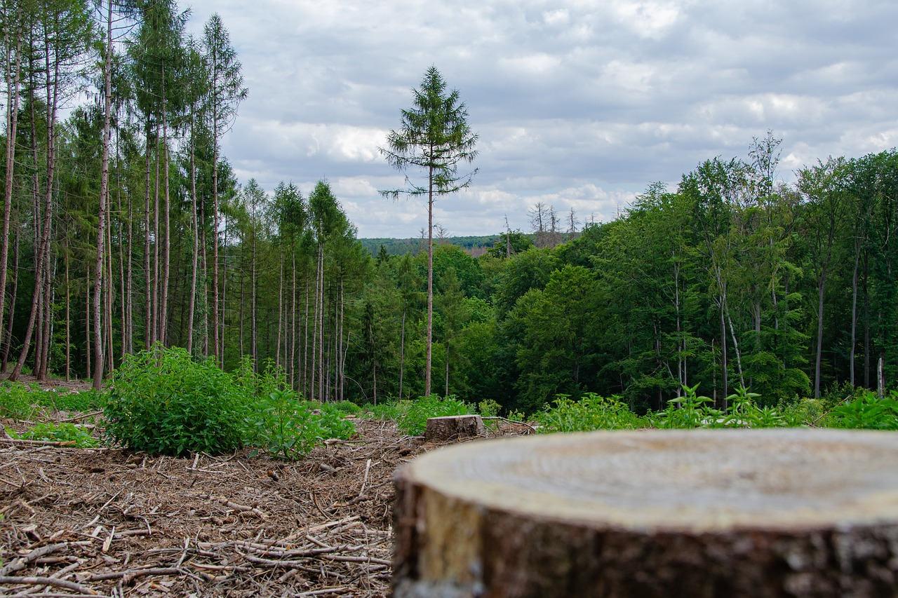

Forests around the world cover 30% of the Earth's land. Russia being the biggest country in the world has the most forest areas all over the country. Forests make up most of land-based species and provide biodiversity especially tropical forests which have the most diversity of life and are called "biodiversity hotspots". Forests have and are still important to the way human population live, it's been this way for thousands of years. Local communities rely on forests for harvesting wood, hunting for food and agriculture.


Deforestation is having the intention to purposelly chopping down forests. They have been cleared to make space for agriculture and animal razing, to obtain wood, maufacturing and construction.

Over 2000 years ago 80% of Western Europe was covered in forests but due to deforestation todays figures are 34%. China has lost much of its forests over the past 4000 years and now only 20% of the country is forested. North America had half of the forests cut down in the eastern part of the continent from the 1600s-1870s for timber and agriculture. Most of the farmland on Earth was once forests.
Most of the world's deforestation is happening in rainforests, for road construction into other areas that were once inaccessible. Building these roads make it easier for people to harm the rainforests. Slash and burn agriculture is a big contributor to deforestation in the tropics. Farmers burn large areas of forest, for ash to spread and fertilise the land, however it only stays fertile for a few short years then the farmers move on and repeat the process. Rainforests are also cleared for making way for logging, cattle ranchs, oil palm and rubber tree plantations.
Carbon Dioxide gets released into the atmosphere due to trees being chopped down. Trees take in carbon dioxide and through photosynthesis, produces oxygen but when trees are burned, the carbon returns to the atmosphere. with less trees around to take in carbon dioxide, there'll be increased greenhouse gas emissions in the atmosphere and accelerates global warming.
The world's many different kinds of species are threatened by deforestation. Particularly, rainforests which are home to most of the world's animal and plant species. When forests are burned or chopped down, these species are driven into extinction, through startvation and destroyted homes. Some scientists believe we are already in the middle of a mass-extinction episode.
Loss of Habitat - 70% of land animals and plant species live in forests. Deforestation leasds to loss of animal and plant species. Trees in the rainforest provide shelter for animals and also provide a canopy to regulate temperature. There's a drastic change in temperature variation from day to night, similar to a desert which can be fatal for many inhabitants.
Increased Greenhouse Gases - Fewer trees around the world lead to a greater amount of greenhouse gases released into the atmosphere. Trees absorb carbon dioxide from the atmosphere so deforestation is preventing trees from doing their jobs and instead release more carbon which increases climate change.
Water in the Atmosphere - Trees have the ability to control the level of water in the atmosphere and help regulate water cycles. The Amazon rainforest is one of the most largest and important forests for water cycles. The millions of trees work together to release water vaper (moisture) into the air that regulate Earth's weather patterns. In deforested areas, there,s no life as water in the air can't be returned to the soil which causes the soil to become dryer and unable to grow crops.
Soil Erosion and Flooding - Trees help land to retain topsoil and water. Without the trees the soil in the land erodes and washes away, which means farmers move away as they can't grew crops on unfertile land and the land becomes prone to flooding.
Indigenous People - These people rely on forests on their way of living such as food, medicine, building materials and culteral resources. Deforestation threatens their way of life as it could effect their health and wellbeing, and being forced to move out of their homes.
Help prevent deforestation by: